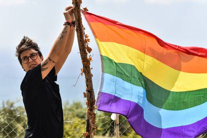

Published on 10/07/2021 - By: Juan de Dios Sánchez Jurado

Defensoria del Pueblo presented a new human rights report related to the LGBTQI population. The statistics show that, between 2020 and 2021, 98 people, including lesbians, gays, bisexuals, transgender women and men, and not conforming people, were murdered in Colombia.
Number of LGBTQI people murdered in Colombia: